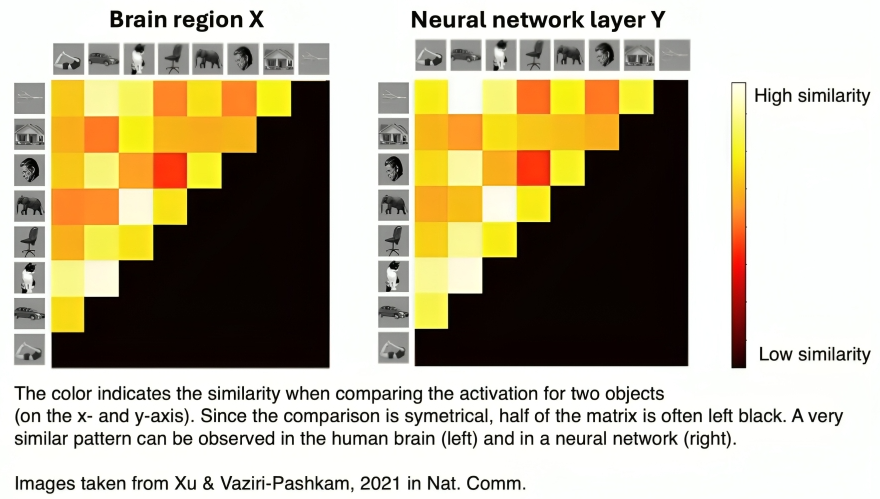
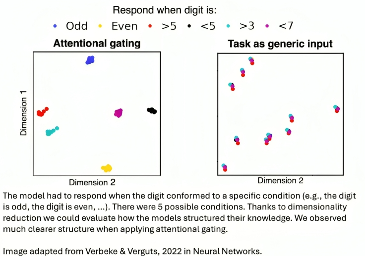
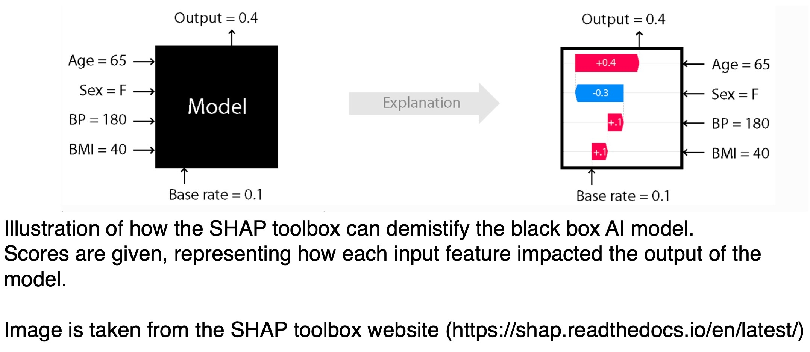

Why Accuracy is not enough
Artificial intelligence has made incredible advances in recent years, with models achieving remarkable accuracy in tasks ranging from image recognition to language processing. But accuracy alone isn’t enough. As AI becomes more embedded in critical areas like healthcare, and self-driving cars, users and developers need to understand why an AI system makes certain decisions.
AI-systems are traditionally seen as a "black box” —a system that takes inputs and produces outputs, but whose inner workings remain a mystery. However, as a cognitive neuroscience researcher, I've worked with systems that hold even more parameters than most AI models: the human brain. The same computational techniques developed to understand how the brain processes information have proven valuable in making AI more explainable. This highlights how methods developed in one field (e.g., neuroscience) can also be applied to gain insights into another (e.g., AI).
Understanding AI through Representational Similarity Analysis (RSA)
One powerful technique borrowed from neuroscience is Representational Similarity Analysis (RSA). Originally designed to compare neural representations in the brain, RSA can also be used to analyze AI models. It works by comparing patterns of activity across different conditions. Naturally, one would assume that activity within the system is more similar for related concepts (e.g., dog and cat) than for unrelated concepts (e.g., dog and bike).
How RSA helps explain AI
- Comparing AI with Human Cognition: RSA allows us to investigate whether AI encodes information in a way that mirrors human cognitive processes. For instance, we can explore if a vision model clusters objects similarly to the human visual cortex. As shown in the image below, the AI model often reflects patterns that align closely with how the brain processes visual information.
- Debugging and Improving AI Models: If an AI model inaccurately clusters semantically unrelated concepts (e.g., dog and bike), RSA can highlight these discrepancies. These insights guide developers in refining the model’s architecture and training process, ultimately improving its accuracy and efficiency.
Figure 1: Example of RSA-matrix from human brain (left) and AI model (right). Taken from Xu & Vaziri-Pashkam, 2021 in Nat. Comm.
Dimensionality Reduction: Revealing Hidden Structure in AI
Another key technique in both neuroscience and AI is dimensionality reduction, which simplifies complex data by identifying the most meaningful patterns. This is crucial because both the brain and AI models process information in high-dimensional spaces (i.e., they have a vast number of parameters). However, humans are generally limited to interpreting visualizations in 3D or 4D (if considering time), making it challenging to grasp structures in data with more than four dimensions. Dimensionality reduction helps bridge this gap by projecting complex data into a more comprehensible form without losing essential information.
In one of my own studies, we examined how various AI models represented digit classification tasks (e.g., distinguishing even vs. odd numbers, or greater than vs. smaller than five). We compared two models:
- Models treating task information as a generic input signal
- Models implementing attentional gating, inspired by human brain mechanisms
As shown in the image below, the attentional gating approach led to more meaningful structure in task representations. Such clear visualization is only possible because of dimensionality reduction.
Figure 2: Example of how dimensionality reduction allows to evaluate structure in AI models
Explainability for AI Users
While RSA and dimensionality reduction mainly help developers, Explainable AI is also crucial for AI users. A key challenge in real-world AI applications is making model decisions more interpretable. AI’s ability to make accurate predictions is only useful if humans can understand and trust those predictions.
Techniques for End-User Explainability
- Confidence Scores: AI models can provide insight into their confidence level regarding a prediction. For example, when classifying an image as a cat, a model might assign a 95% confidence score, indicating a high level of certainty. Lower confidence scores alert users to potential errors or uncertain predictions.
- Confusion Metrics: These metrics assess a model's performance by showing how frequently it misclassifies one category as another. In the case of self-driving cars, it may be less concerning if a model occasionally confuses a red traffic light with a stop sign, compared to confusing a red light with a green one. Both systems may have the same accuracy, but the latter presents a much more critical reliability issue.
- SHAP (Shapley Additive Explanations): A widely used toolbox, SHAP provides values that help explain which features most influenced a model’s output. For example, in a medical diagnosis model, SHAP can highlight whether symptoms, test results, or patient history had the most impact on the decision. By computing the contributions of each feature, SHAP makes AI decision-making more transparent, offering interpretability in fields like healthcare, scientific research, and automated decision-support systems.
- LIME (Local Interpretable Model-agnostic Explanations):LIME is another popular method that allows to determine which features are most influential in model decisions. It is particularly useful for explaining complex machine learning models without requiring changes to their architecture.
- Counterfactual Explanations: Instead of explaining why an AI made a decision, counterfactuals show what would have needed to change for a different outcome. For example, in a healthcare setting, a diagnostic AI might explain its decision by stating: “If the patient's cholesterol level were lower, the risk assessment would have changed.” This approach makes AI decision-making more actionable for medical professionals and patients.
Figure 3: Visualization of Explainable AI via SHAP toolbox.
Conclusion
For too long, AI research has focused on improving accuracy. However, a high-performing AI model that users don’t understand is not truly useful. Transparency, interpretability, and trust are just as critical as accuracy, if not more so.
Humans are at the core of AI development—not only as its creators but also as its primary users. Our own intelligence provides a blueprint for designing AI, but AI systems must ultimately be tailored to our needs. Making AI less of a black box isn’t just about trust—it’s about creating models that are more interpretable, accountable, and ultimately, more effective.